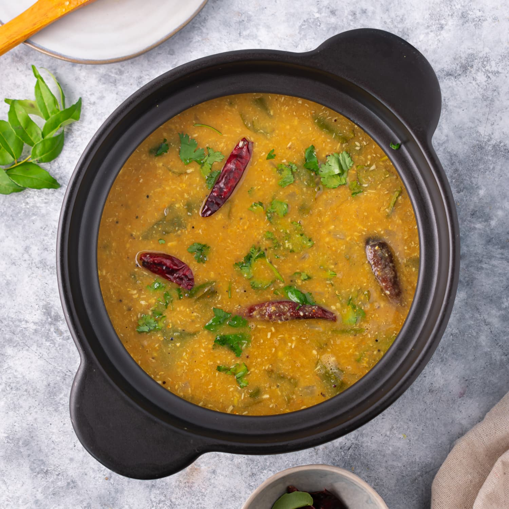

SAMBAR

DESCRIPTION
Sambar is an Indian soup dish made with dal, or lentils. Though it is of South Indian origin, every Indian culture enjoys it as well. Sambar is served with rice or South Indian specialties, such as dosa and idli.
Sambar can be made in a number of ways, with the base ingredients remaining constant. My favorite sambar is radish sambar, however, I enjoy making it with other vegetables including carrots, potatoes, bell peppers, and pearl onions.
INGREDIENTS
- washed and cooked dal
- radish, chopped
- tomatoes, chopped
- onions, chopped
- tamarind paste, dissolved in water
- curry leaves
- cilantro
- oil
- water
- turmeric
- salt
- red chili powder
- sambar powder
- asafoetida
- mustard seeds
- dried red chilis
STEPS
- add washed dal, salt, turmeric, and asafoetida to pressure cooker and cook for 3-4 whistles
- in a pot, heat oil and add onions
- once sautéd, add tomatoes
- after 2-3 minutes, add radish
- add turmeric, salt, and little water, and cover and cook for 2-3 minutes or until radish is cooked
- add sambar powder and dissolved tamarind paste
- add cooked dal and stir. Add water for desired consistency
- in a small pan, heat oil
- once hot, add mustard seeds
- once seeds start spluttering, add dried red chilis and curry leaves
- quickly add this to the sambar
- top sambar with chopped cilantro